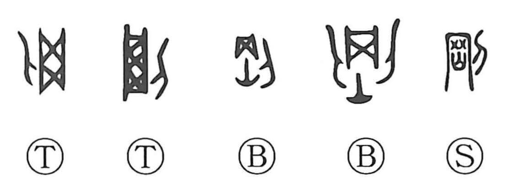

剛

Kun: | On: go
hard ・ strong ・ tough
Explanation
剛 combines 岡 with 刀, a knife. 岡 pictures a clay casting mould hardened by fire from below. After metal had been cast inside, the outer mould had to be cut apart to release the finished object.
The high heat made the mould extremely hard. Cutting it required force, so 剛 names hardness and unyielding strength. The knife identifies the action by which that firmness is encountered.
Applied to a person, the same quality becomes a strong will, firmness of character, or vigorous resolve. 剛毅 and 剛健 carry this strength into conduct and constitution, keeping the sense of something that does not readily give way.